DAY 2 · CLASSROOM LECTURE 4 OF 6
Incarnation, atonement, Nicaea, Augustine, Christology, creed and Trinity
REL 210 · Chapter 11
How can Christians speak of Jesus as human and divine?
What do Jesus' death and resurrection mean for sin, death, and reconciliation?
How does Christian devotion to Jesus and the Spirit relate to one God?
Bishops, councils, scriptures, and imperial institutions shape disputes.
The councils formulate contested answers; they do not imply every Christian agreed.
In his hometown synagogue, Jesus reads Isaiah: “The Spirit of the Lord is upon me, because he has anointed me to bring good news to the poor…” Then he rolls up the scroll and says:
“Today this scripture has been fulfilled in your hearing.”
Luke 4:21 (NRSV); compare Mark 14:61–62
Soteriology: theology dealing with salvation, especially as effected by Jesus Christ.
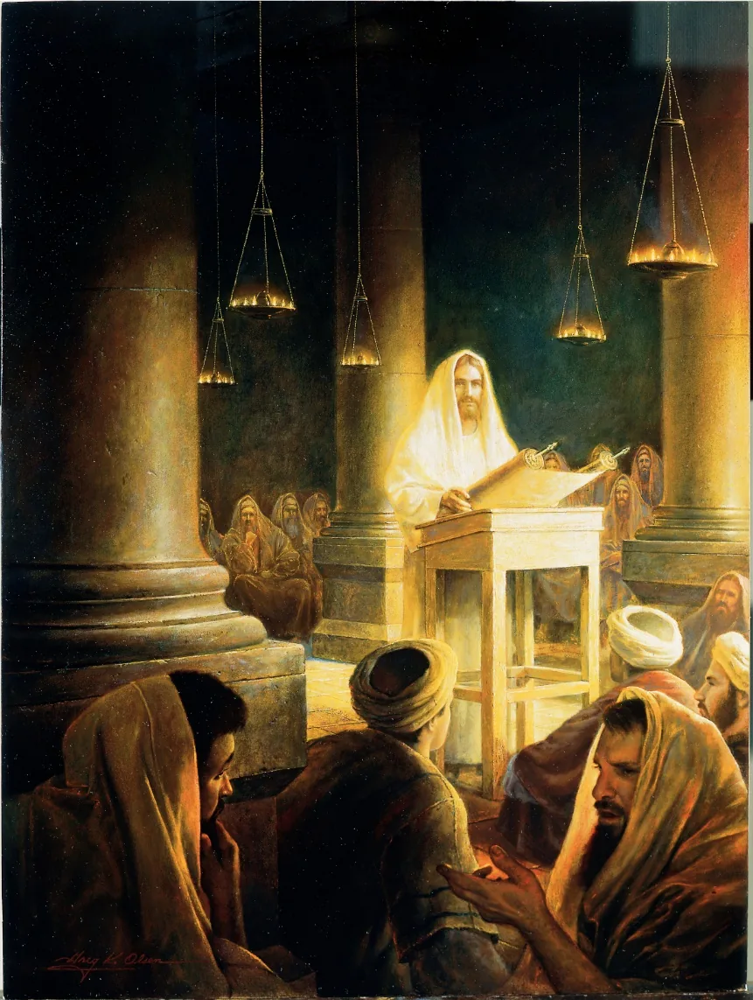
Go therefore and make disciples of all nations, baptizing them in the name of the Father and of the Son and of the Holy Spirit,
Matthew 28:19 (NRSV)
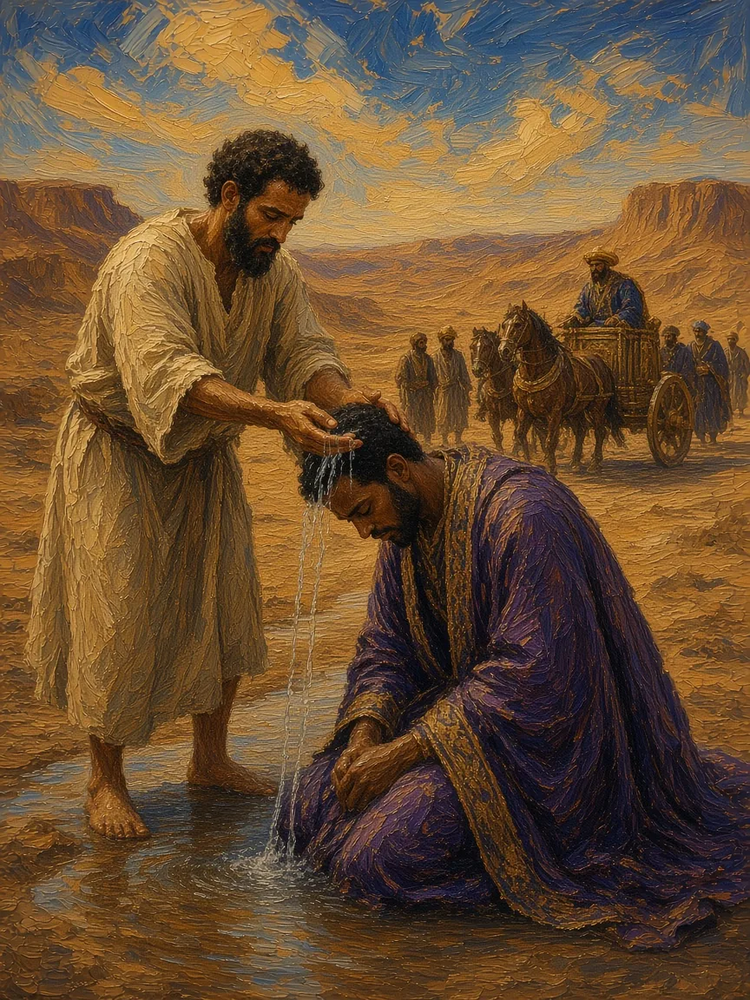
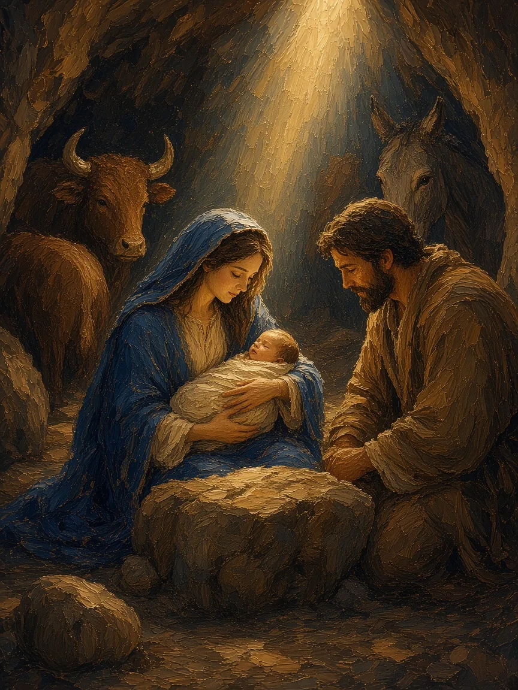
Jesus is both fully divine and fully human.
God became human in the person of Jesus Christ.
And the Word became flesh and lived among us, and we have seen his glory, the glory as of a father’s only son, full of grace and truth.
John 1:14 (NRSV)
Willful disobedience of God’s commandments.
Sin cuts one off from the presence of God.
A Savior is needed to justify humanity to God. Justify: to pardon and clear from guilt; to absolve from guilt and merited punishment.
since all have sinned and fall short of the glory of God;
Romans 3:23 (NRSV)
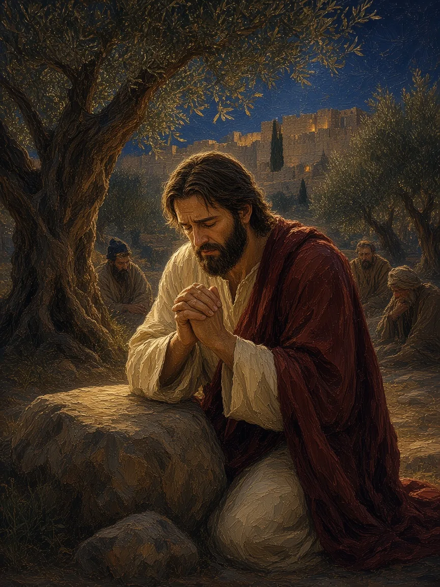
Doctrine
Atonement is one doctrine expressed through several overlapping models
Christ deals with sin and restores a broken relationship between humanity and God.
Through death and resurrection, Christ defeats sin, death, and enslaving powers.
Christ reveals divine love and calls people toward repentance and transformed life.
These are not necessarily competing theories; many Christians combine them.
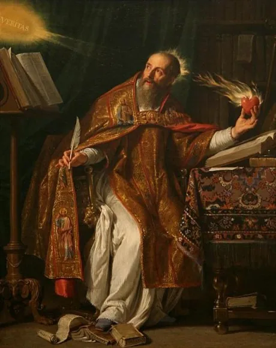
Section II
How did debate become doctrine—and doctrine become a boundary of Christian belonging?
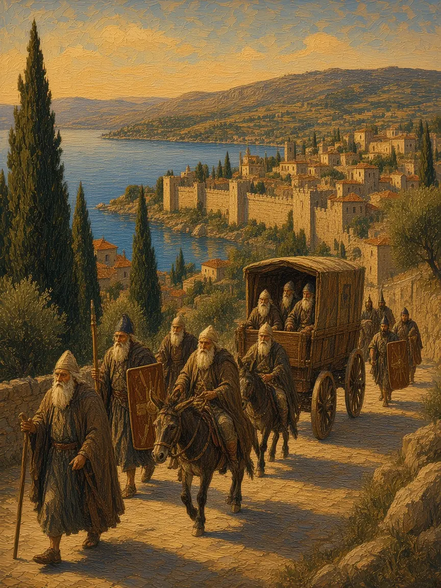
Arianism · Monophysitism · Docetism · Monarchianism
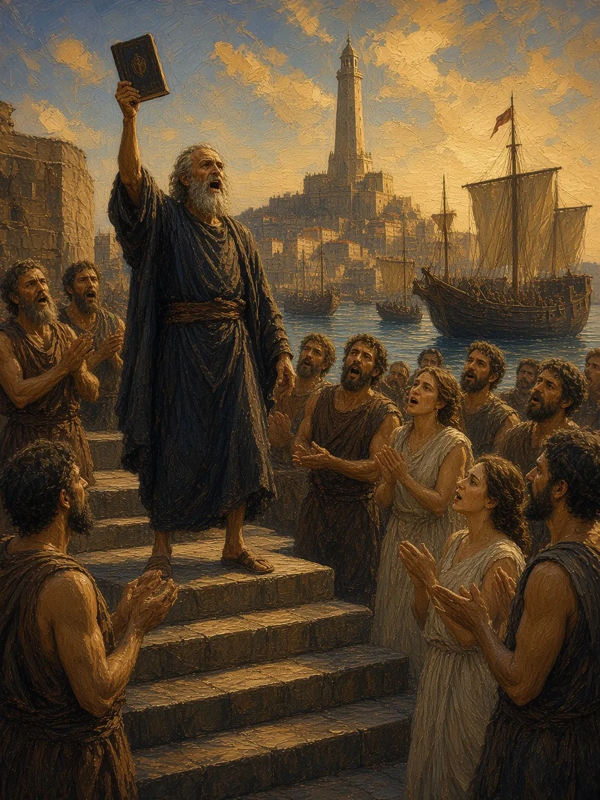
Read the Creed; identify phrases that are in direct reaction to the “heresies” just discussed.
is in reaction to Arianism.
is in reaction to Docetism.
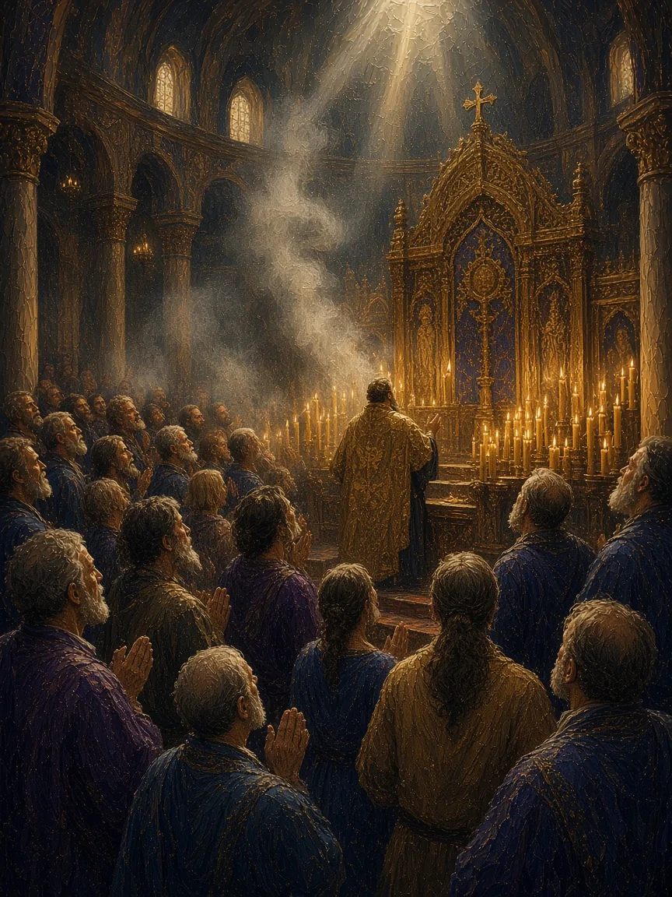
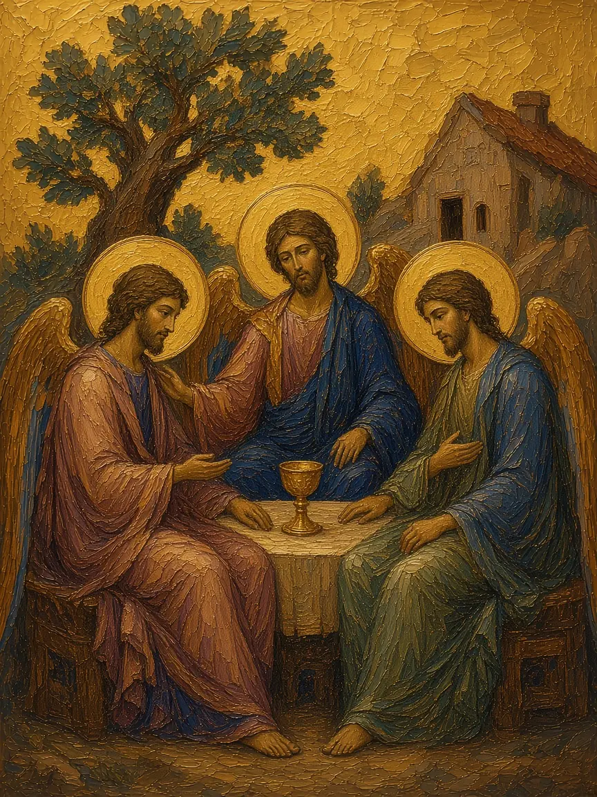
We believe in the Holy Spirit, the Lord, the giver of life, who proceeds from the Father [and the Son]. With the Father and the Son he is worshiped and glorified. He has spoken through the Prophets.
Nicene Creed, ecumenical English text (BCP 1979); [and the Son] = the western filioque
Powerful, uncontrollable, and unpredictable
REL 210 · Chapter 11
God is one, while Father, Son, and Holy Spirit are named in Christian worship.
Jesus' human life, suffering, and death remain essential to salvation.
Christians understand Jesus as sharing in divine life, not merely teaching about God.
Different churches still interpret theological language and conciliar authority differently.
Move from ancient doctrine to the histories of the eastern and western churches.
LECTURE 4 · PIERIAN SPRING
The 35-minute classroom lecture ends here. All following slides are assigned independent study for Lecture 4: Salvation, Creeds and Trinity.
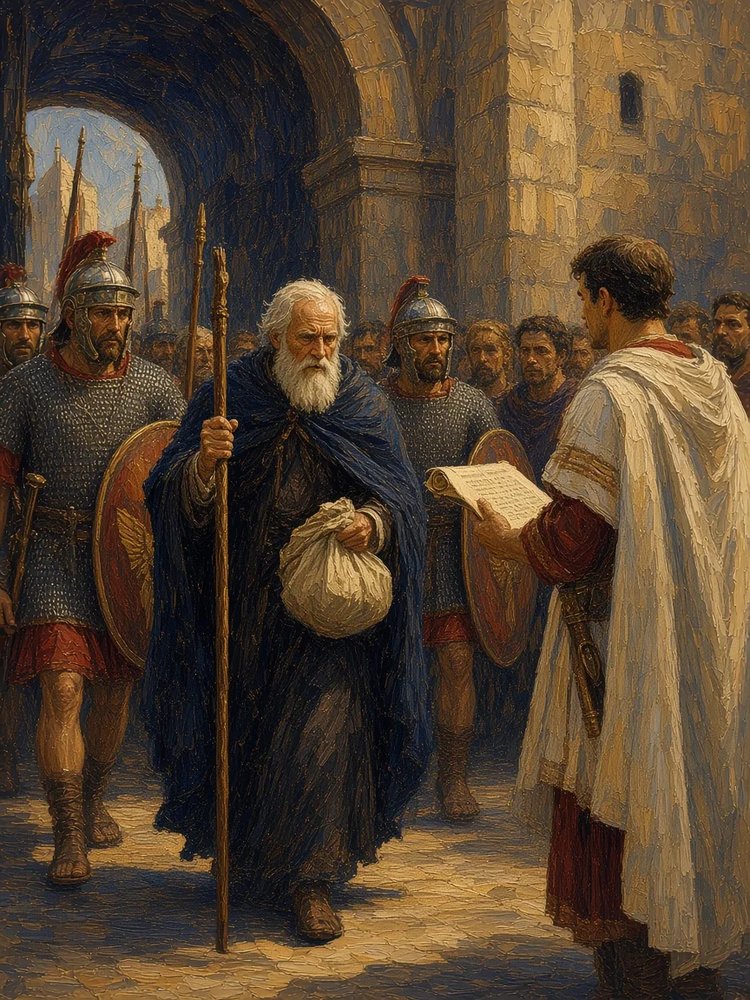
“Heresy” is a label the winning side gives afterward.
Arianism · Monophysitism · Docetism · Monarchianism
How are Christ’s full divinity and full humanity united in one incarnate nature?
Chalcedon (451) answered: one person in two natures. Churches that kept “one united nature” became the Oriental Orthodox.
Arianism · Monophysitism · Docetism · Monarchianism
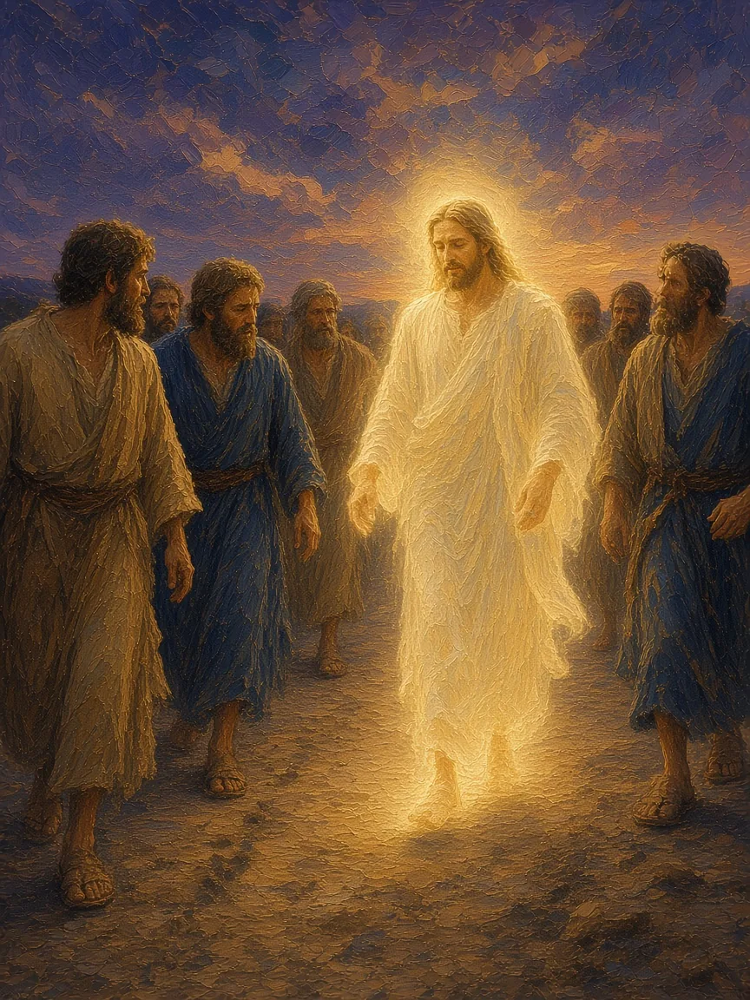
Arianism · Monophysitism · Docetism · Monarchianism
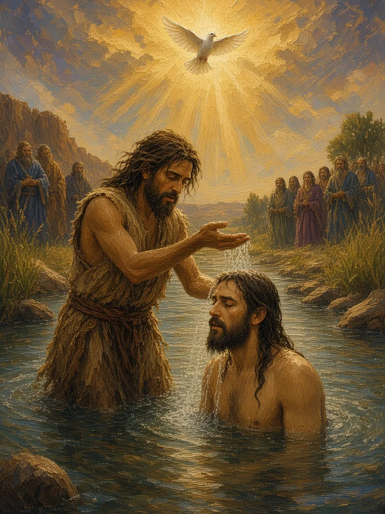
Strongly maintained the essential unity of deity.
Christ, although of miraculous birth, was a mere man until adopted by God.
God the Father came to earth and suffered and died under the appearance of the Son. The Trinity is three manifestations of the single divine being.
All powerful in heaven and on earth; there is nothing outside his power. A living being, not a force or a cosmic principle.
Through him heaven and earth were created. Jesus is the crucified and exalted Lord, and the Son of God. Interpretations of Jesus: the Gospels of Matthew, Mark, Luke, and John.
Creeds, Trinity & Orthodoxy
After the councils: what do most Christians share?
When Christians disagree, which authority decides what counts as faithful interpretation?
PIERIAN SPRING · REQUIRED INDEPENDENT STUDY
World War I challenged optimistic claims about steady moral progress.
Theologian Karl Barth emphasized divine revelation, grace, and the difference between God and humanity.
A varied movement revisited Reformation ideas while engaging modern scholarship; it is not Eastern Orthodoxy.
Barth helped formulate the 1934 Barmen Declaration against subordinating church proclamation to Nazi ideology.
A modern theological dispute can revisit ancient questions about revelation, grace, and Christian authority.
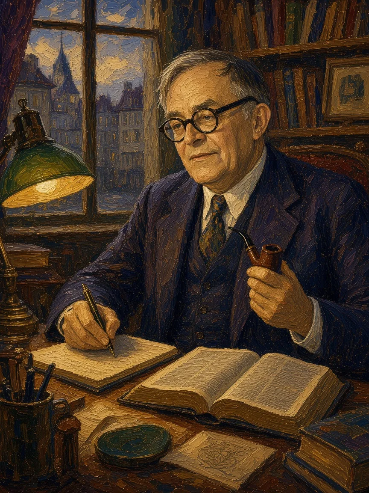
PIERIAN SPRING · REQUIRED INDEPENDENT STUDY
Contrast two images Christians use to explain why Jesus' death matters.
Why did differing accounts of Jesus' divine and human natures cause lasting disputes?
How did political power alter the consequences of doctrinal disagreement?
What central theological question did fourth-century Trinitarian language address?
Study check: explain the examples, not only the terminology. Return to earlier slides when needed.
→ / Space: Next slide
← : Previous slide
Tab / Shift+Tab: Move between pop-up terms and links
Enter / Space on a dotted term: Open its pop-up
S: Speaker notes
F: Fullscreen
O: Overview
ESC: Close an open pop-up (otherwise toggles the overview)